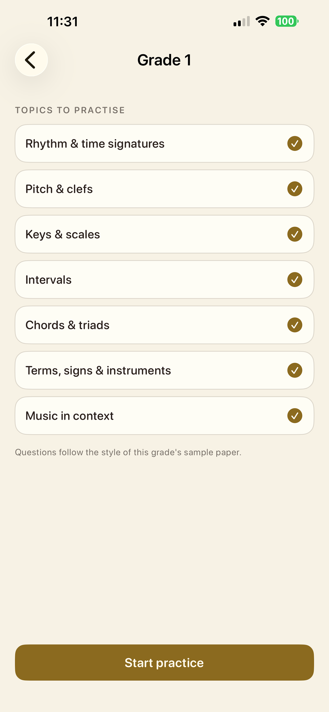
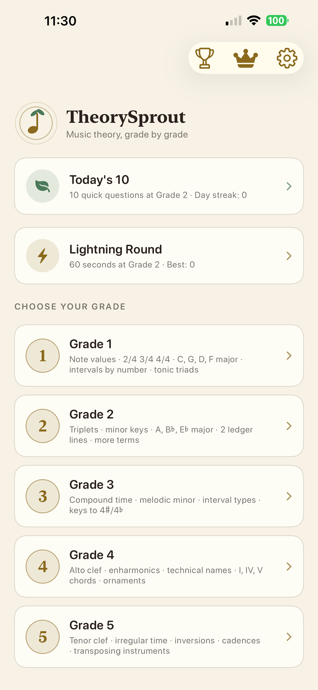
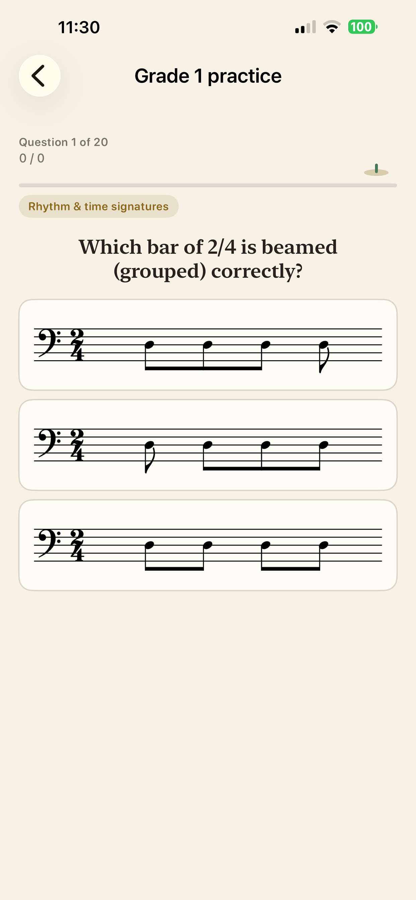
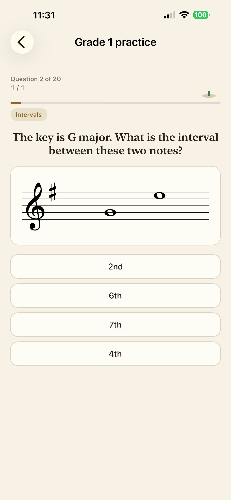
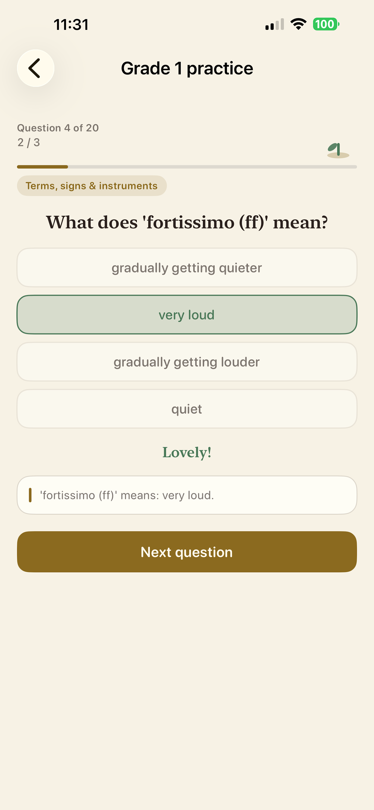

Exam-style drills for Grades 1–5, with every question generated fresh.
Download on the App StoreFree · iPhone & iPad · iOS 16+ · 7-day free trial on Pro
Every student working toward a graded theory exam hits the same wall. There are only so many past papers, and after a couple of passes you're remembering answers instead of working them out.
TheorySprout generates questions instead of storing them. Underneath is a music theory engine written from scratch — scale spelling for every major and minor key out to six sharps and six flats, intervals with quality, triads and their inversions, cadences, technical names, transposing instruments. Questions are built from that model at run time, so you can drill key signatures for an hour and never meet the same one twice.





| Grade | Scope |
|---|---|
| Grade 1 | Note values · 2/4, 3/4, 4/4 · C, G, D, F major · intervals by number · tonic triads · treble & bass clef |
| Grade 2 | Triplets · minor keys · A, B♭, E♭ major · two ledger lines · more terms |
| Grade 3 | Compound time · harmonic & melodic minor · interval types · keys to 4♯/4♭ |
| Grade 4 | Alto clef · enharmonics · double accidentals · technical names · I, IV, V · ornaments |
| Grade 5 | Tenor clef · irregular time · inversions · cadences · transposing instruments |
Generated from a real theory engine, not a fixed bank. Drill one topic as long as you need.
Every stave is drawn live in treble, bass, alto and tenor clef using a professional music font — not images.
Focus on exactly what you find tricky, or take a mixed session across the whole grade.
See why an answer is right, so a practice session teaches rather than just tests.
A short set when time is tight, or race the clock when it isn't.
Every completed session kept with its score, plus your best and average.
The app is free to download. TheorySprout Pro unlocks unlimited practice across every grade and topic. Subscriptions renew automatically and can be cancelled any time in your Apple ID settings.
TheorySprout is made by Yeong Jie Khoo, an independent developer. It was built for his ten-year-old son, who was working toward a Grade 5 theory exam and kept running out of past papers.
Download press kit — icon, screenshots, logo and boilerplate. For review codes or anything else, email parcelwish@gmail.com.